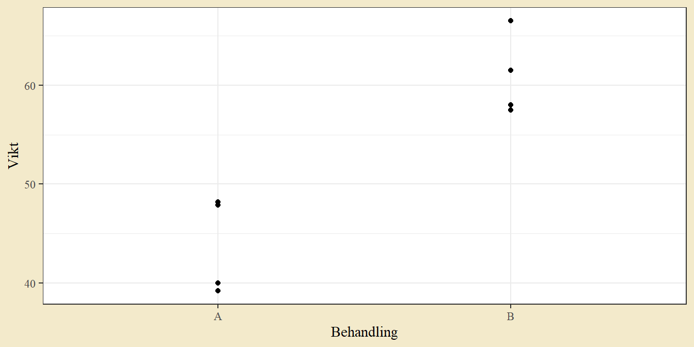

6 Datorövning 6. Test för två stickprov
Datorövning 6 handlar om hypotestest och konfidensintervall för jämförelse av två stickprov. Efter övningen ska vi kunna genomföra och tolka
t-test för jämförelse av två medelvärden,
z-test för jämförelse av två proportioner,
chi-två-test för jämförelse fördelningar mellan två eller flera grupper,
konfidensintervall för skillnaden mellan två medelvärden eller två proportioner.
6.1 Två stickprov och normalfördelad data
Vid normalfördelad data från två stickprov eller grupper vill vi nästan alltid testa om populationerna har samma medelvärde. Det kan också ses som att vi testar om differensen mellan medelvärdena är noll. Vi skiljer mellan två fall: matchade stickprov - där varje observation i den ena gruppen är kopplad till en observation i den andra gruppen; och oberoende stickprov - där det inte finns någon sådan koppling mellan stickproven. Typiska exempel på matchade stickprov är när man mäter samma individ för och efter en behandling och syskonstudier där ett syskon får en behandling och den andra en annan behandling.
6.1.1 t-test för två matchade stickprov
Vid matchade stickprov kan varje observation i en behandlingsgrupp paras med en observation i den andra gruppen. Själva testet är ett t-test för ett stickprov på differensserien beräknat från varje par. I R kan man antingen beräkna den differensserien eller använda t.test() med två dataserier och argumentet för parvisa observationer satt till sant, paired = T.
Som exempel ges följande data från en studie på äpple, där trädhöjd mätts före och efter en näringsbehandling.
dat_apple <- tibble(Tree = 1:4,
Before = c(48, 43, 30, 47),
After = c(51, 44, 42, 54))
dat_apple## # A tibble: 4 × 3
## Tree Before After
## <int> <dbl> <dbl>
## 1 1 48 51
## 2 2 43 44
## 3 3 30 42
## 4 4 47 54Datan kan illustreras med ett punktdiagram där en linje binder samman paret. För att enkelt skapa grafen i ggplot2 kan man först omstrukturera datan till lång form genom pivot_longer.
dat_long <- dat_apple %>% pivot_longer(-Tree, names_to = "Time", values_to = "Height")
dat_long## # A tibble: 8 × 3
## Tree Time Height
## <int> <chr> <dbl>
## 1 1 Before 48
## 2 1 After 51
## 3 2 Before 43
## 4 2 After 44
## 5 3 Before 30
## 6 3 After 42
## 7 4 Before 47
## 8 4 After 54Uppgift 6.1 (Äppelgraf) Fyll i kodstycket nedan för en graf av äppeldatan. Axlarna ges av Time och Height. Två observationer kan kopplas genom att sätta Tree som grupp.
ggplot(dat_long, aes(___, ___, group = ___)) +
geom_point() +
geom_line()För att testa för skillnad före och efter behandling sätter vi upp hypoteser
H0: mu före behandling är lika med mu efter behandling H1: mu före behandling är skild från mu efter behandling
Testet kan antingen utföras som ett enkelt t-test på differensserien
t.test(dat_apple$Before - dat_apple$After)##
## One Sample t-test
##
## data: dat_apple$Before - dat_apple$After
## t = -2.3681, df = 3, p-value = 0.09868
## alternative hypothesis: true mean is not equal to 0
## 95 percent confidence interval:
## -13.477405 1.977405
## sample estimates:
## mean of x
## -5.75eller som ett t-test för två stickprov där man särskilt anger att datan är parad
t.test(dat_apple$Before, dat_apple$After, paired = T)##
## Paired t-test
##
## data: dat_apple$Before and dat_apple$After
## t = -2.3681, df = 3, p-value = 0.09868
## alternative hypothesis: true mean difference is not equal to 0
## 95 percent confidence interval:
## -13.477405 1.977405
## sample estimates:
## mean difference
## -5.75För bägge alternativen måste datan vara ordnad så att de två vektorerna matchar varandra parvis. Notera att ordningen på vektorerna påverkar konfidensintervall men inte p-värdet (i fallet med en tvåsidig mothypotes). Här är det naturligt att ta den andra mätningen först eftersom konfidensintervallet då blir ett intervall för medelvärdesökningen efter behandling. Ett p-värde på \(0.0987\) ger att man inte förkastar vid en signifikansnivå på fem procent. Vi drar därmed slutsatsen att det inte finns någon signifikant skillnad före och efter behandling.
Uppgift 6.2 (Ensidigt test) Gör ett tillägg till ett av kodstyckena med t.test() för att beräkna ett ensidigt test med mothypotesen att träden ökar i höjd efter behandling. Hjälpsidan för t.test() kan tas fram genom att köra ?t.test().
Konfidensintervallet beräknas från differenserna på samma sätt som vid ett stickprov med normalfördelad data. Tolkningen liknar den för ett stickprov: med 95 procents konfidens ligger den sanna skillnaden i medelvärden i intervallet.
Uppgift 6.3 (Lökimport) Åtta monoglukosidmätningar på lök samlas in från fyra konventionella och fyra ekologiska ordlare. Resultatet finns i fliken Lökfärg i excelfilen Uppgiftsdata.xlsx på canvassidan. Ladda ner filen och importera datan genom att fylla i raden nedan.
library(readxl)
dat_onion <- read_excel("____", sheet = "Lökfärg")
# dat_onion <- read_csv("https://raw.githubusercontent.com/adamflr/ST0060-2022/main/Data/Uppgiftsdata/Uppgift_L%C3%B6kf%C3%A4rg.csv") # Alternativ lösningUppgift 6.4 (Lökgraf) Fyll i stycket nedan för en graf av lökdatan från föregående uppgift.
dat_long <- dat_onion %>%
pivot_longer(-Odlare, names_to = "Odlingstyp", values_to = "Utfall")
dat_long
ggplot(dat_long, aes(___, ___, group = Odlare)) +
geom_point() +
geom_line()Tyder grafen på någon skillnad mellan odlingstyper?
Uppgift 6.5 (Löktest) Använd lökdatan i föregående uppgift för att testa om det finns en signifikant skillnad mellan konventionell och ekologisk.
Formulera hypoteser och genomför testet med t.test(). Lös gärna uppgiften med miniräknare först.
6.1.2 t-test för två oberoende stickprov
Ett t-test för två oberoende stickprov testar om två populationsmedelvärden är lika. Ta som exempel följande data på jordgubbsskörd vid två olika näringsbehandlingar (A och B). Här är stickproven inte matchade - det finns ingen direkt koppling mellan en observation i den ena behandlingsgruppen till någon observation i den andra.
dat_berry <- data.frame(Behandling = c("A", "A", "A", "A", "B", "B", "B", "B"),
Vikt = c(40, 48.2, 39.2, 47.9, 57.5, 61.5, 58, 66.5))
dat_berry## Behandling Vikt
## 1 A 40.0
## 2 A 48.2
## 3 A 39.2
## 4 A 47.9
## 5 B 57.5
## 6 B 61.5
## 7 B 58.0
## 8 B 66.5Datan kan illustreras med ett enkelt punktdiagram.
ggplot(dat_berry, aes(Behandling, Vikt)) +
geom_point()
Ett t-test för två oberoende stickprov har nollhypotesen att grupperna har samma populationsmedelvärde och alternativhypotesen att populationsmedelvärdena är skilda (för det tvåsidiga fallet):
H0: mu_A är lika med mu_B H1: mu_A är ej lika med mu_B
Testet kan utföras i R genom funktionen t.test(). Data kan antingen anges som en formel med dess data Vikt ~ Behandling, data = dat_berry (vilket man kan läsa som vikt uppdelat efter behandling) eller som två skilda vektorer. Det förra alternativet är oftast enklare om man har datan på lång form - med en kolumn som anger grupp (i exemplet Behandling) och en kolumn som anger utfallsvärdet (i exemplet Vikt).
För formen med formel ger det
# Formelskrivning
t.test(Vikt ~ Behandling, data = dat_berry, var.equal = T)##
## Two Sample t-test
##
## data: Vikt by Behandling
## t = -5.3157, df = 6, p-value = 0.001803
## alternative hypothesis: true difference in means between group A and group B is not equal to 0
## 95 percent confidence interval:
## -24.898417 -9.201583
## sample estimates:
## mean in group A mean in group B
## 43.825 60.875och för formen med vektorer
# Två separata vektorer
## Filtrera ut data där behandling är A
Vikt_A <- dat_berry$Vikt[dat_berry$Behandling == "A"]
## Filtrera ut data där behandling är B
Vikt_B <- dat_berry$Vikt[dat_berry$Behandling == "B"]
t.test(Vikt_A, Vikt_B, var.equal = T)##
## Two Sample t-test
##
## data: Vikt_A and Vikt_B
## t = -5.3157, df = 6, p-value = 0.001803
## alternative hypothesis: true difference in means is not equal to 0
## 95 percent confidence interval:
## -24.898417 -9.201583
## sample estimates:
## mean of x mean of y
## 43.825 60.875Argumentet var.equal = T används för att beräkna testet där gruppernas varianser antas vara lika. Grundinställningen är testet där varianser inte antas vara lika, så t.test(Vikt ~ Behandling, data = dat) ger ett lite annat resultat.
Uppgift 6.6 (Ej lika varianser) Vilka resultatvärden ändras i utskriften om man sätter var.equal = F?
Testet ger ett p-värde på \(0.0018\), vilket leder till att nollhypotesen förkastas på enprocentsnivån. Detta tyder på att det finns en viktskillnad mellan behandlingarna. Utskriften ger också ett 95-procentigt konfidensintervall på \((-24.898, -9.202)\). Tolkningen är att skillnaden mellan populationsmedelvärden ligger i intervallet med 95 procents konfidens. Notera att värdet noll inte ligger i intervallet.
Uppgift 6.7 (Ensidigt test) Gör lämpliga tillägg till kodstycket nedan för att göra ett ensidigt test (om B ger högre vikt än A).
t.test(Vikt ~ Behandling, data = dat_berry, var.equal = T, alternative = "two.sided")Om man har fler än två grupper kan man vilja göra parvisa t-test - alltså ett t-test för varje par av grupper.
Ett exempel på funktionen pairwise.t.test() ges nedan. Funktionen bygger på att datan är i lång form, med en kolumn som anger det numeriska utfallet och en kolumn som anger behandlingen.
pairwise.t.test(dat_berry$Vikt, dat_berry$Behandling, p.adjust.method = "none", pool.sd = F)##
## Pairwise comparisons using t tests with non-pooled SD
##
## data: dat_berry$Vikt and dat_berry$Behandling
##
## A
## B 0.002
##
## P value adjustment method: noneMatchade observationer kan också kallas parade (eng. paired) så se upp med terminologin. Funktionen pairwise.t.test() för parvisa jämförelse mellan behandlingar, men testerna är t-test för oberoende stickprov.
Uppgift 6.8 (Ekorrdata) I en undersökning av hur den europeiska ekorren (Sciurus vulgaris) förändras i vikt under övervintring mäts 7 slumpmässigt valda ekorrar före och 5 slumpmässigt valda ekorrar efter övervintring. Datan finns tillgänglig i excelfilen Uppgiftsdata.xlsx på canvassidan, i fliken Ekorrar. Ladda ner filen och fyll i stycket nedan för att importera datan.
dat_sq <- read_excel("___", sheet = "Ekorrar")
dat_sq
# dat_sq <- read_csv("https://raw.githubusercontent.com/adamflr/ST0060-2022/main/Data/Uppgiftsdata/Uppgift_Ekorrar.csv") # Alternativ lösningUppgift 6.9 (Ekorrgraf) Fyll i följande stycke för en lämplig graf för att jämföra mätningarna före och mätningarna efter.
ggplot(dat_sq, aes(x = ___, y = ___)) +
___()Finns det någon synlig viktskillnad?
Uppgift 6.10 (Ekorrtest) Genomför ett t-test för två oberoende stickprov på ekorrdatan genom att fylla i kodstycket nedan. Formulera tydliga hypoteser och dra en klar slutsats.
t.test(___ ~ ___, data = dat_sq, var.equal = ___)Uppgift 6.11 (Ekorrdesign) Ett problem med att mäta skilda individer före och efter övervintring är att det kan finnas en stor skillnad i vikt mellan individuella ekorrar. Kan man lägga upp försöket på ett sätt som reducerar det problemet?
6.2 z-test och konfidensintervall för två proportioner
Om man vill jämföra två proportioner kan man använda z-testet för två stickprov. Säg till exempel att man har två sorter av någon planta och vill se hur stor proportion som är infekterad av bladmögel. I den ena gruppen (sort A) är 17 av 50 infektera och i den andra (sort B) är 26 av 60 infekterade. Testets hypoteser är i det tvåsidiga fallet
H0: proportion A är lika med proportion B H1: proportion A är skild från proportion B
I R kan testet genomföras med prop.test-funktionen. Funktionens första argument är antalen infekterade, som en vektor med två värden, och dess andra argument är totalerna. Likt testet med ett stickprov finns en möjlighet att göra en kontinuitetskorrektion med correct-argumentet. För att få samma resultat som räkning för hand anger vi att korrektion inte ska göras med correct = F.
prop.test(c(17, 26), c(50, 60), correct = F)##
## 2-sample test for equality of proportions without continuity correction
##
## data: c(17, 26) out of c(50, 60)
## X-squared = 0.9978, df = 1, p-value = 0.3178
## alternative hypothesis: two.sided
## 95 percent confidence interval:
## -0.27488771 0.08822105
## sample estimates:
## prop 1 prop 2
## 0.3400000 0.4333333Notera att funktionen inte ger ett z-värde utan ett \(\chi^2\)-värde (utskrivet X-squared). Det beror på att funktionen beräknar z-testet som ett likvärdigt \(\chi^2\)-test. Det z-värde man får om man genomför testet som ett z-test är detsamma som roten ur utskriftens \(\chi^2\)-värde. Testet ger ett högt p-värde på 0.32 vilket innebär att nollhypotesen inte förkastas: det finns ingen signifikant skillnad i infektionsproportion.
Funktionen prop.test() ger också en utskrift av konfidensintervallet. Tolkning är att skillnaden i proportioner mellan populationerna ligger i intervallet med 95 procents konfidens. Notera att nollan ingår i intervallet.
Uppgift 6.12 (Lämplig approximation?) Z-test bygger på en normalapproximation. Som tumregel för när approximationen är rimlig används ofta att n * p * (1 - p) ska vara större än 10 för bägge stickproven. Gör beräkningen för datan i exemplet (17 av 50 respektive 26 av 60).
Uppgift 6.13 (Burfågel) Det finns en förvånansvärt stor mängd studier på kopplingen mellan innehav av burfågel och lungcancer. En sådan studie (Kohlmeier et al 1992) ger följande antal för burfågelägande och lungcancer.
dat_bird <- data.frame(Burfågel = c("Burfågel", "Ej_burfågel"),
Lungcancer = c(98, 141),
Ej_lungcancer = c(101, 328))
dat_bird## Burfågel Lungcancer Ej_lungcancer
## 1 Burfågel 98 101
## 2 Ej_burfågel 141 328Datan tyder på att människor med burfågel har en förhöjd risk att drabbas av lungcancer. Genomför ett z-test för att se om andelen burfågelägare än densamma i de två patientgrupperna.
prop.test(x = c(___, ___), n = c(___, ___), correct = F)Genomför ett z-test för att se om andelen cancerdrabbade är densamma i de två burfågelsgrupperna. Hur förhåller sig p-värdena i de bägge testerna till varandra?
prop.test(x = c(___, ___), n = c(___, ___), correct = F)Finns det någon industri som kan ha ett intresse av att finansiera forskning som söker alternativa riskfaktorer för lungcancer?
6.3 Chi-två-test för korstabeller
Data med två kategoriska variabler kan presenteras med en korstabell. Ta som (ett något deppigt) exempel överlevnadsdata från Titanic. Datan finns tillgänglig i R som Titanic. I detta fall ges överlevnad filtrerad på vuxna män, uppdelat efter klass.
dat_titanic <- Titanic %>% data.frame() %>% filter(Sex == "Male", Age == "Adult")
dat_titanic## Class Sex Age Survived Freq
## 1 1st Male Adult No 118
## 2 2nd Male Adult No 154
## 3 3rd Male Adult No 387
## 4 Crew Male Adult No 670
## 5 1st Male Adult Yes 57
## 6 2nd Male Adult Yes 14
## 7 3rd Male Adult Yes 75
## 8 Crew Male Adult Yes 192En korstabell kan konstrueras med pivot_wider.
dat_wide <- dat_titanic %>%
pivot_wider(names_from = Survived, values_from = Freq)
dat_wide## # A tibble: 4 × 5
## Class Sex Age No Yes
## <fct> <fct> <fct> <dbl> <dbl>
## 1 1st Male Adult 118 57
## 2 2nd Male Adult 154 14
## 3 3rd Male Adult 387 75
## 4 Crew Male Adult 670 192Datan tyder på att överlevnad är beroende av klass. Datan kan illustreras med uppdelade staplar
ggplot(dat_titanic, aes(Class, Freq, fill = Survived)) +
geom_col(position = position_fill(), color = "black") +
scale_fill_manual(values = c("red4", "white"))
Argumentet position i geom_bar används för att skapa proportionella staplar.
Ett chi-två-test på en korstabell har nollhypotesen att det inte finns något samband mellan variabeln för rader och variabeln för kolumner. Antal frihetsgrader ges av antal rader minus ett gånger antal kolumner minus ett. Testet kan enkelt göras med chisq.test(). Som ingångsvärde kan man plocka ut kolumnerna med numeriska värden genom hakparenteser.
dat_wide[, 4:5] # De två numeriska kolumnerna## # A tibble: 4 × 2
## No Yes
## <dbl> <dbl>
## 1 118 57
## 2 154 14
## 3 387 75
## 4 670 192chisq.test(dat_wide[, 4:5])##
## Pearson's Chi-squared test
##
## data: dat_wide[, 4:5]
## X-squared = 37.988, df = 3, p-value = 2.843e-08Utskriften ger teststorheten, antal frihetsgrader, och p-värdet. I det här fallet är p-värdet mycket litet och slutsatsen blir att nollhypotesen förkastas - det finns ett samband mellan klass och överlevnad. Antalet frihetsgrader ges av antalet rader minus ett gånger antalet kolumner minus ett (här (4-1) * (2-1) = 3).
Chi-två-testet är ett asymptotiskt test - dess egenskaper är beroende av stora stickprov. Som gräns för storleken används ofta att samtliga förväntade antal ska vara större än 5. Funktionen ger en varning om förväntade värden är små. En möjlig lösning i sådana fall är att slå ihop klasser.
test_result <- chisq.test(dat_wide[, 4:5])
test_result$expected # Samtliga förväntade värden över 5## No Yes
## [1,] 139.5171 35.48290
## [2,] 133.9364 34.06359
## [3,] 368.3251 93.67487
## [4,] 687.2214 174.77864Om detta krav inte är uppfyllt skriver funktionen ut en varning.
Uppgift 6.14 (Ogiltig approximation) Ta följande lilla korstabell och kör chisq.test() för att få ett felmeddelande.
dat <- matrix(c(4,2,5,1), 2)
dat## [,1] [,2]
## [1,] 4 5
## [2,] 2 1Uppgift 6.15 (Burfågeln återvänder) En svensk studie på koppling mellan burfågel och lungcancer (Modigh et al, 1996) ger följande antal (för män).
dat_bird_swe <- data.frame(Burfågel = c("Burfågel", "Ej_burfågel"),
Lungcancer = c(108, 144),
Ej_lungcancer = c(171, 256))
dat_bird_swe## Burfågel Lungcancer Ej_lungcancer
## 1 Burfågel 108 171
## 2 Ej_burfågel 144 256Genomför ett chi-två-test för att se om andelen cancerdrabbade än densamma i de två burfågelsgrupperna. Formulera tydliga hypoteser. För att få utfall som stämmer med en handräkning kan man sätta correct = F.
dat_bird_swe[, c(2,3)]
chisq.test(___, correct = F)Chi-två-testet kan tillämpas på korstabeller med godtyckligt antal rader och kolumner.
Uppgift 6.16 (Po-ta-toes-import) I en undersökning på potatis används fyra behandlingar (a1b1, a1b2, a2b1 och a2b2). 125 potatisar från varje behandling sorteras in i fyra olika färggrupper (A, B, C och D). Datan finns i fliken Po-ta-toes i excelfilen Uppgiftsdata.xlsx på canvassidan. Ladda ned filen och läs in datan genom att fylla i stycket nedan.
dat_pot <- read_excel("___", sheet = "Po-ta-toes")
dat_pot
# dat_pot <- read_csv("https://raw.githubusercontent.com/adamflr/ST0060-2022/main/Data/Uppgiftsdata/Uppgift_Po-ta-toes.csv")::: {exercise name=“Po-ta-toes-graf”} För att göra en graf kan man pivotera datan till lång form.
dat_long <- dat_pot %>% pivot_longer(-Färg, values_to = "Antal", names_to = "Behandling")
dat_longSkapa ett stapeldiagram med uppdelade staplar genom att fylla i kodstycket nedan. Behandling ska vara på x-axeln och ifylld färg ska ges av Färg.
ggplot(dat_long, aes(x = ___, y = ___, fill = ___)) +
geom_col(col = "black", width = 0.6) +
scale_fill_brewer(palette = "Reds")Finns det några tydliga skillnader mellan behandlingar? :::
::: {exercise name=“Po-ta-toes-test”} Beräkna ett chi-två-test på potatisdatan för att se om det finns färgskillnader mellan behandlingarna. Formulera tydliga hypoteser och ge ett tydligt svar.
dat_pot[,-1]
chisq.test(___):::
Uppgift 6.17 (Hemmasegrar över årtionden) Vi vill undersöka om andelen hemmasegrar i herrallsvenskan förändrats över tid. Vi importerar data över matchresultat sedan 1920-talet.
dat_alls <- read_csv("https://raw.githubusercontent.com/adamflr/ST0060-2022/main/Data/Allsvenskan%2C%20herrar%2C%201924-2020.csv")
dat_alls## # A tibble: 15,236 × 9
## Hemmalag Bortalag Hemmamål Bortamål Publik Domare Arena Datum Säsong
## <chr> <chr> <dbl> <dbl> <dbl> <chr> <chr> <date> <chr>
## 1 Örgryte Hammarby 5 1 4000 Carl … <NA> 1924-08-03 1924_…
## 2 IFK Norrköp… Landskr… 0 1 1500 Ivar … <NA> 1924-08-03 1924_…
## 3 IFK Malmö IFK Göt… 1 1 3276 Johan… <NA> 1924-08-03 1924_…
## 4 Helsingborg Gais 1 2 3000 Carl … <NA> 1924-08-03 1924_…
## 5 Eskilstuna Sleipner 1 3 700 Oscar… <NA> 1924-08-03 1924_…
## 6 AIK Västerå… 5 1 2000 Arne … <NA> 1924-08-03 1924_…
## 7 IFK Göteborg Gais 1 3 3600 Sigfr… <NA> 1924-08-08 1924_…
## 8 Västerås IK Eskilst… 0 1 600 Berti… <NA> 1924-08-10 1924_…
## 9 Sleipner Örgryte 0 1 2280 Ernfr… <NA> 1924-08-10 1924_…
## 10 Landskrona IFK Göt… 0 4 1000 Gusta… <NA> 1924-08-10 1924_…
## # … with 15,226 more rowsFöljande kod skapar en variabel för årtionde, en variabel för hemmaseger, och räknar ut antalen hemmasegrar per årtionde. Detaljer är oviktiga här.
library(lubridate)
dat_hemma <- dat_alls %>%
mutate(År = year(Datum),
Årtionde = floor(År / 10) * 10,
Hemmaseger = ifelse(Hemmamål > Bortamål, "Hemmaseger", "Ej_hemmaseger")) %>%
count(Årtionde, Hemmaseger) %>%
pivot_wider(values_from = n, names_from = Hemmaseger) %>%
mutate(Total = Hemmaseger + Ej_hemmaseger,
Proportion = Hemmaseger / (Hemmaseger + Ej_hemmaseger))Fyll i koden nedan för att skapa en tidsserie (en linjegraf med tid på x-axeln) för andelen Proportion.
ggplot(dat_hemma, aes(x = ___, y = ___)) +
___()Uppgift 6.18 (1920-talet mot 1960-talet) Använd ett z-test för att se om proportionen hemmasegrar under 1920-talet (371 av 738) är skild från 1960-talet(590 av 1320).
prop.test(c(___, ___), n = c(___, ___), correct = F)